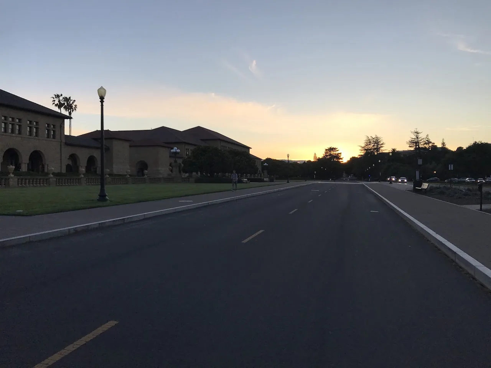

Live → Blog
April 28, 2019

Time flies, doesn't it? Like how is it 10pm already? Wasn't I supposed to finish reading the Uber Case for my Organizational Change class before I went to bed? How is it Senior Spring already? Wasn't I supposed to have figured out what I want to do with my life to the finest detail by now? How am I almost 25? Didn't Brian Adams say I was going to be 18 'til I die? Everywhere I look time is flying. With my undergraduate education at Stanford drawing to a close soon, the anticipation of the eventual end of my mother's illness, and the end to this very day, I find myself thinking about the impermanence of life and everything in it. In the past this idea would have unsettled me. Today, I resonate with the following quote:
"O my soul, do not aspire to immortal life but exhaust the limits of the possible" - Pindar
At the core of this quote is an acceptance of the transient nature of life and everything in it. By not aspiring to immortal life, one accepts that we all have a finite time to live, a finite time to the day, and a finite time for particular experiences. After all we cannot add a day to our life, a minute to the day, nor a second to an experience. This acceptance is not cowardly by any means. By exhausting the limits of the possible, it is a resolve to make the most of every single second of that finite life, day, or experience. It is only when one has given the best that they can bow out with a smile and a grateful heart at the end of their finite time. It is my hope that I will carry this spirit in all the areas of my life. In academics, not to have all-nighters in a bid to extend the productive day, but to make the most of the day time. In my relationships and communities by giving them my best when I still can. In my professional aspirations by paving the path now when I still have resources to set myself up for a successful next chapter.
With that, I believe I have exhausted the limits of the possible for the 9,119th day of my life. So I now take these bones back to their owners. Maybe tomorrow I will get another shot and I shall do my best with it. Impermanence is perhaps what makes this life so beautiful. It is the reason to have faith, to live with passion, and to love as much as possible. So as graduation approaches and my friends are about to disperse, or if I should wake up tomorrow to the news that Sis Mos has crossed River Jordan, I shall take solace in that however way I might feel will be impermanent. There is beauty in a sunset!
Updated on Day 9120: Sometimes I write things that shortly become relevant to me not too long after. In this case, less than a day after the brief reflection on impermanence. I would like to quote this New York Times article I have found helpful in situations when the impermanence of situations is revealed:
"It's about honoring what happened," she said. "You met a person who awoke something in you. A fire ignited. The work is to be grateful. Grateful every day that someone crossed your path and left a mark on you."
Update on Day 9134: Today I felt ready to begin the process of letting go. So as I have come to adapt one of the traditions around dealing with loss to death, I shaved my hair off. I love my hair a lot, the pain of letting my hair go is to remind me that it is okay to let things go. It is not fair, not desired, but it is okay and I should be at peace with it. I am enriched to have had this experience. As my girl Celine would say:
Fly, fly little wing Fly where only angels sing Fly away, the time is right Go now, find the light
Update on Day 9157: My hair is slowly growing back. Looking back, I am grateful to this ending because it opened my eyes to the ways in which I was not being consistent with my resolutions regarding how I am going to approach interpersonal relationships. Things can only go uphill from here. As the romance department is closed for repairs, I have spent a lot of time investing in my friendships. Especially here at Stanford, as we are about to graduate and they will disperse around the world. We cannot fight impermanence, but as Andrew Marvell said:
Thus though we cannot make our sun stand still, Yet we will make him run.
Update on Day 9203: Impermanence is such a beautiful concept! 83 days has passed, and the grieving process has concluded. The birth, death, and rebirth cycle continues. Who knows where the current adventures will take me. I have lived to fight another day, and it is another day.
Update on Day 9344: As I begin to learn to love another again, I center the wisdom of my best friend, Urmi, who once shared with me that to truly love another is to do so without hope. I am jumping out again, and there is a possibility I will crash and burn. There is also a possibility that I will fall into something beautiful! But I am not conditioning my jumping on any outcome, positive or negative. This is the last update to this article. This madam is now being promoted to archived history from active history.
← Return to Blog